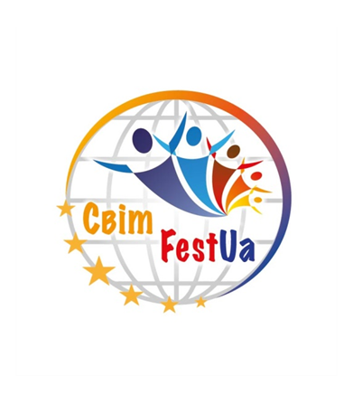

Творчість є однією з цілей розвитку особистості, самовдосконалення, та самовираження…
II ВСЕУКРАЇНСЬКИЙ ФЕСТИВАЛЬ - КОНКУРС
«СвітFestUa» Київ – 2021»
20 березня 2021 р.
Концертна зала КНУБА
та , для бажаючих, ДИСТАНЦІЙНИЙ КОНКУРС
«СвітFestUa»-Київ 2021»
Організатор: ГО “Мистецтво для всіх”
За підтримки: Солом’янської районної в місті Києві державної адміністрації
Місце проведення: м. Київ вул. Преображенська, 2. Концертна зала КНУБА (Київський національний університет будівництва та архітектури).
Творчий фестиваль - конкурс проводиться з метою ознайомлення представників різних міст із різноманіттям культурного скарбу нашої держави. Створення для дітей і молоді можливостей для творчого спілкування, розкриття нових талантів, обмін досвідом, підвищення професійної майстерності. Удосконалення системи художньо-естетичного розвитку. Виховання у дітей любові до мистецтва і краси, формування естетичного смаку.
ДЛЯ УЧАСТІ У КОНКУРСІ НЕОБХІДНО:
1.ПОДАТИ ЗАЯВКУ НА УЧАСТЬ В КОНКУРСІ до 10 березня 2021 року!!!
2.ЗАЯВКИ ПРИЙМАЮТЬСЯ В УСТАНОВЛЕНІЙ ОРГКОМІТЕТОМ ФОРМІ
на E-MAIL: svetlana_fest@i.ua
Заявка подається окремо на кожну номінацію та вікову категорію.
Разом з заявкою треба вислати списки дітей з датами народження!!!
Факт подачі заявки автоматично означає, що конкурсанти ознайомлені з умовами Положення, приймають та погоджуються з усіма правилами проведення фестивалю-конкурсу.
3. ВИСЛАТИ ФОНОГРАМУ КОНКУРСНОГО НОМЕРУ на E-MAIL: svetlana_music_fest@ukr.net
Кожна фонограма повинна бути підписана із вказівкою, наприклад: «хореографія__назва колективу__назва номеру__з точки чи ні__вікова категорія ». Якщо у вас декілька номерів, у листі, вкажіть будь ласка,назву номерів в тому порядку, в якому ви бажаєте виступати на фестивалі. З собою на конкурсі рекомендується мати декілька видів носіїв, щоб бути універсально готовим.
- Підтвердженням отримання заявки буде відповідь від організаторів на вашу електронну пошту!
ДЛЯ ДИСТАНЦІЙНОЇ УЧАСТІ НЕОБХІДНО:
1.Вислати відеозапис з вашим виступом на електронну адресу: svetlana_fest@i.ua або викласти у YOUTUBE (нам надати посилання на відео).
2. Заповнити заявку та надіслати до 10 березня 2021 р. на e-mail: svetlana_fest@i.ua
3. У відповідь на Вашу анкету-заявку, прийде лист з підтвердженням участі та реквізити для внесення благодійного внеску!
4.Участь у фестивалі підтверджується тільки після внесення передоплати у розмірі повного благодійного внеску за колектив або соліста до 10 березня 2021 року.
З 10.03.2021 до 20.03.2021- журі переглядає та оцінює номери.
22-24.03.21 – Ви отримуєте результати!!! Та нагороди!!!
ЖУРІ КОНКУРСУ
Оцінку виступів учасників конкурсу здійснює журі, до складу якого входять ведучі спеціалісти та діячі в області культури та мистецтва України, а також викладачі найвідоміших ВУЗів міста Києва та країни,
народні та заслужені артисти, діячі культури і мистецтв, представники шоу-бізнесу.
Розподілення призових місць відбувається на основі кількості набраних балів за конкурсний номер. Результати фіксуються у протоколі журі.
Журі оцінює учасників за 10-ти бальною системою закритого голосування. Рішення журі є остаточними і оскарженню та перегляду не підлягають! За рішенням журі допускається дублювання призових місць за результатами конкурсу. Журі має право присудити не всі призові місця, Гран-прі може не присуджуватися. Остаточний склад журі затверджується організаторами за 10 днів до початку конкурсу-фестивалю.
КРИТЕРІЇ, ЗА ЯКИМИ ОЦІНЮЮТЬСЯ ВИСТУПИ УЧАСНИКІВ
творчий підхід та індивідуальність виконавців;
реалізація задуму художнього твору;
рівень виконавської майстерності та синхронність виконання;
артистизм і сценічна культура;
естетика сценічного одягу;
відповідність репертуару віковій категорії виконавців;
синхронність, техніка та складність трюкового репертуару.
ІНШІ УМОВИ
Вхід до глядацької зали під час конкурсу безкоштовний!!!
Сцена для виступу дерев’яна
та має розмір: ширина-12 м; глибина - 7,5 м.
Концертна зала вміщує 600 глядачів.
Для вокалістів буде забезпечено — 4 радіо мікрофони Shure та 4 мікрофонних стійок (при необхідності, кількість мікрофонів можна буде збільшити).
|
Хореографія 1.1класична хореографія; 1.2 дитяча хореографія; 1.3 народна хореографія; 1.4 народна стилізація; 1.5 сучасна хореографія ( contemporary, jazz, modern) 1.6 street Dance ( hip-hop, break-dance, jazz funk та н..) 1.7 dance Show ; 1.8 естрадна хореографія; 1.9 естрадно-спортивна; 1.10 бальна; 1.11 спортивно – бальна хореографія; 1.12 східна; 1.13 cheerleading (чирлідинг); 1.14 НАЙКРУТІША ПІДТРИМКА! (виступ батьків)
|
Вокал 2.1 естрадний вокал; 2.2 академічний; 2.3 народний; 2.4 джазовий; 2.5 вокально – хореографічний; 2.6 авторська пісня.
|
Оригінальне мистецтво 3.1 циркове мистецтво ---акробатика, пластичний етюд, еквілібристика, антипод, каучук, жонглювання, ілюзіон, тощо. (Всі види, крім номерів у повітрі з вогнем, чи з гострими предметами).
3.2 театри клоунади; 3.3 барабанщиці; 3.4 мажоретки.
|
|
Вікові категорії (для всіх номінацій)
(3- 10 років);
(7-14 років);
|
Форми (для всіх номінацій)
(4,5,6,7,8 чоловік);
(від 9 чоловік та більше).
|
Тривалістьконкурсного номеру(окрім оригінального жанру) Солісти – до 2-х хвилин(хореографія);
Малі форми – до 3-х хвилин;
Ансамблі – до 5-х хвилин.
Тривалість конкурсного номеру для оригінального жанру до 6 хвилин. |
|
|
||
РЕЗУЛЬТАТИ КОНКУРСУ ТА НАГОРОДЖЕННЯ
Переможці конкурсу нагороджуються кубками та дипломами:
Володарі «Grand Prix» (в кожному жанрі окремо) нагороджуються: великим кубком та дипломом;
УВАГА!!! Керівник колективу (або викладач соліста) , володаря «Grand Prix», буде запрошений на наступний конкурс «СвітFestUa» до команди професійного складу ЖУРІ!!! А колектив (соліст), отримає сертифікат 50% знижки на наступний фестиваль;
Лауреати I, II, III ступенів нагороджуються: кубками та дипломами;
ВСІ учасники конкурсу нагороджуються дипломами та пам’ятними медалями!!!
Всі учасники фестивалю отримують фото та відео матеріали виступів БЕЗКОШТОВНО!!!
Також, журі конкурсу, може нагородити учасників та керівників спеціальними призами та спеціальними дипломами.
Результати конкурсу оголошуються учасникам тільки на церемонії нагородження.
ФІНАНСОВІ УМОВИ ПРОВЕДЕННЯ КОНКУРСУ
Конкурс-фестиваль не є комерційним заходом. Фінансова база для організації Фестивалю складається зі спонсорських коштів та грошового організаційного внеску учасників. Всі організаційні внески витрачаються виключно на потреби пов’язані з організацією фестивалю - конкурсу : нагородна продукція, друкарські матеріали, подарунки учасникам, оренда залу, забезпечення творчої роботи журі і режисерської групи, організаційно-технічне забезпечення конкурсних заходів тощо.
БЛАГОДІЙНИЙ ВНЕСОК :
Соло – 400 грн. ( 1номер);
Дует - 300 грн. з учасника (1номер);
Тріо - 250 грн. з учасника (1 номер)
Малі форми (від 4 до 8 чол.) – 200 грн. з учасника (1 номер)
За кожен наступний заявлений номер - внесок 50% від стартового!
Творчі колективи (від 9 учасників) можуть представити на конкурс 1-2 номери в одній номінації та віковій категорії!!!
Ансамблі (9-16 чол.) – 180 грн. з учасника(1-2 номери);
Термін подачі заявок – до 10 березня 2021р. (включно).
Якщо колектив подає дві заявки в одній віковій категорії, але групи дітей різні – оплата 100%.
Благодійний внесок сплачується в день конкурсу!!!!! (готівкою під час реєстрації колективів).
Реєстрація проводиться на протязі конкурсного дня!!!
Якщо колектив вибуває з конкурсної програми з будь-яких причин, керівник зобов’язаний попередити організаторів за тиждень до початку конкурсу.
Детальний план проведення конкурсу-фестивалю буде надіслано керівникам колективів за три дні до початку конкурсу.
Для бажаючих прийняти участь дистанційно:
 ДЛЯ
ДИСТАНЦІЙНОЇ УЧАСТІ НЕОБХІДНО:
ДЛЯ
ДИСТАНЦІЙНОЇ УЧАСТІ НЕОБХІДНО:
1.Вислати відеозапис з вашим виступом на електронну адресу: svetlana_fest@i.ua або викласти у YOUTUBE (нам надати посилання на відео).
2. Заповнити заявку та надіслати до 10 березня 2021 р. на e-mail: svetlana_fest@i.ua
3. У відповідь на Вашу анкету-заявку, прийде лист з підтвердженням участі та реквізити для внесення благодійного внеску!
4.Участь у фестивалі підтверджується тільки після внесення передоплати у розмірі повного благодійного внеску за колектив або соліста до 10 березня 2021 року.
З 10.03.2021 до 20.03.2021- журі переглядає та оцінює номери.
22-24.03.21 – Ви отримуєте результати!!! Та нагороди!!!
БЛАГОДІЙНИЙ ВНЕСОК для ДИСТАНЦІЙНОЇ УЧАСТІ:
• Соло - 200 грн.;
• Для дуетів – 300 грн.(за двох);
• Тріо – 400 грн. (за трьох);
• Малі форми (4- 8 учасників) – 100 грн.;
• Ансамблі (від 9 учасників і більше) - 90 грн.
Термін подачи заявок – до 10 березня 2021р. (включно).
Організатори залишають за собою право змінювати положення та програму конкурсу-фестивалю з огляду на кількість надісланих заявок, за умови, що всі учасники будуть попереджені про зміни заздалегідь.
Організатори мають право використовувати та розповсюджувати відео та фотоматеріали фестивалю без узгодження з учасниками, з метою реклами та розвитку даного фестивалю-конкурсу.
Всі питання, пов’язані з виступами учасників конкурсу вирішуються в робочому порядку з оргкомітетом фестивалю.
Відповідальність за життя та здоров,я дітей конкурсантів, несуть батьки та керівники.
Організатори не несуть відповідальність за загублені або вкрадені речі.
Для отримання додаткової інформації можна написати нам листа на e-mail: svetlana_fest@i.ua
або зателефонувати:
+38(067)507 44 75(Viber); +38(099)444 29 41 – Світлана Прокопчук
+38(067)365 92 00; +38(093)991 92 11 – Христина Карпинська
Дане положення є офіційним запрошенням на фестиваль!
ДО ЗУСТРІЧІ НА ЧАРІВНОМУ СВЯТІ ТВОРЧОСТІ!!!
З повагою організатори!